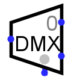

解复用器
| 库: | 复用器 |
| 介绍: | 2.0 Beta 11 |
| 外观符号: |  |
行为
将西边的输入复制到东边的输出之一； 这些输出中的哪一个是通过南边缘输入接收到的当前值指定的。 我发现将解复用器视为类似于铁路开关，由选择输入控制是有用的。
（顺便说一句，一些权威机构将其拼写为 deplexor，但 deplexer 是主要拼写。）
引脚（假设元件朝东，选择底部/左侧）
- 西边（输入，位宽与数据位属性匹配）
- 要路由到东边缘的输出之一的值。
- 东边，可变数量（输出，位宽与数据位属性匹配）
- 输出的编号从北边的 0 开始。 如果输出的编号与当前通过南边的选择输入接收到的值匹配，则输出将与西边的输入匹配； 否则，其值将是全零或全浮点，具体取决于三态的值？ 属性。 如果选择输入包含任何未指定的位，则所有输出都是浮动的。
- 南边，左侧（输入，位宽1）
- 启用：为 0 时，所有输出均包含所有浮动位，无论数据和选择输入如何。
- 南边，灰色圆圈表示的右侧（输入，位宽与 Select Bits 属性匹配）
- 选择输入：此输入的值确定将西边缘接收的值路由到东边缘的哪个输出。
属性
当选择或添加元件时，数字“1”到“4”会更改其选择位
属性，Alt-0到Alt-9会更改其数据位
属性 ，方向键更改其 方向
属性。
- 方向
- 元件的方向（指定哪一侧有输出）。
- 选择位置
- 选择线和启用线相对于元件的位置。
- 选择位
- 元件南边缘的选择输入的位宽度。 解复用器的输出数量将为 2selectBits。
- 数据位
- 通过解复用器路由的数据的位宽度。
- 三态？
- 指定未选择的输出应该浮动（是）还是零（否）。
- 禁用输出
- 指定当元件被禁用时（即，当启用引脚为 0 时）输出的每一位应该是什么。 选项包括零和浮动； 在后一种情况下，输出实际上与任何其他端口断开。
- 包括启用吗？
-
当该属性为
yes
时，该元件具有启用输入。该属性主要用于支持使用不提供启用输入的旧版本 Logisim-evolution 构建的电路。
Poke 工具行为
无
文本工具行为
无
返回 电路元件库参考手册